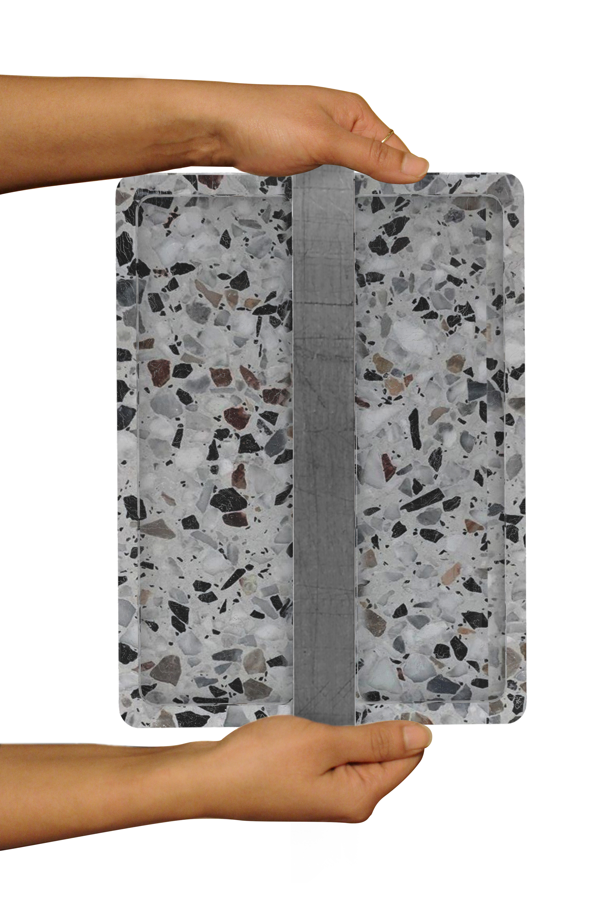
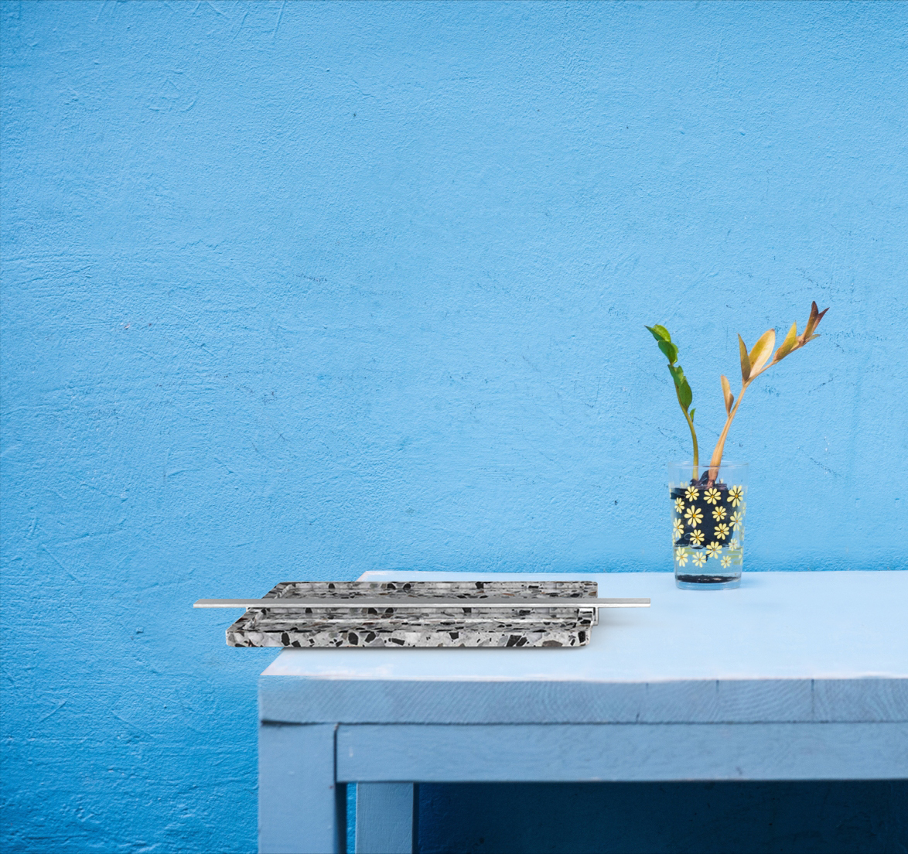
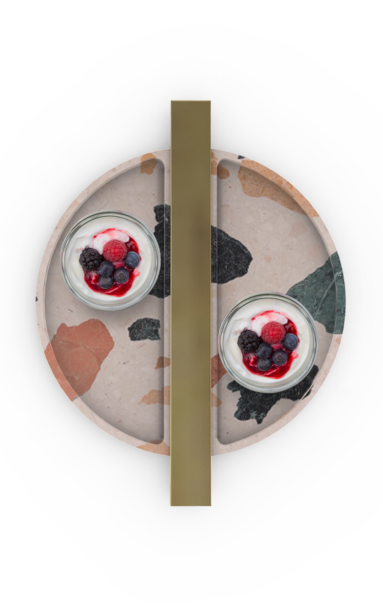

HOMEWARE
The trays were designed with the handle as a key component. Visually playful, the materials used were oxidized brass, rough steel and terrazzo.
The handle makes the design balanced, not visually and physically.



